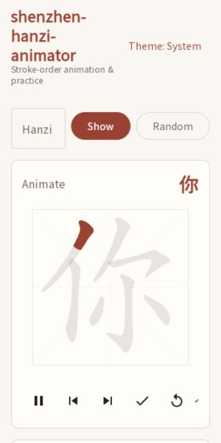
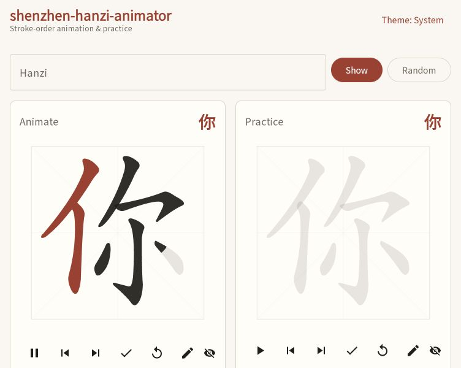
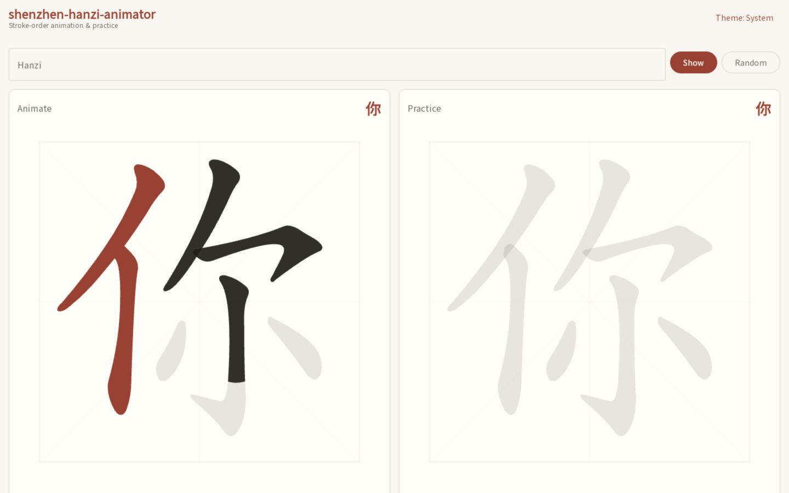

The library has a useful controller and provider architecture, but its current build, Android resource packaging, and bundled-data attribution need correction before a public release. Its largest predictable size improvement is optional character data. Runtime loading, parser validation, callback lifecycle, and responsive controls need hardening before applications should depend on it.
This review covers correctness, reusable-library integration, public GitHub publication, download size, and the Compose web demo. Application sources were not edited. Measurements and screenshots accompany this report in the same directory.
BundledStrokeOrderProvider.kt, lines 59 and 72 requests files/strokes/<id>.json.gz and files/strokes/index.txt.gz. The newly built release APK contains 257 stroke assets, but none ends in .gz. Its shard zero is named 0.json and its bytes exactly equal the decompressed source shard; the index is named index.txt.
The suffix removal and decompression are already visible in merged Android assets. The generated Compose resource reader only prepends the resource namespace, and the Android reader delegates the same path to AssetManager.open. There is no compensating suffix translation. This provides strong packaged-artifact evidence that the bundled provider cannot resolve these paths; an installed-device run was not performed.
Correction: store gzip bytes under an opaque extension such as .bin, update generator, resource names and loader together, and inspect the resulting APK. Add an installed-app test that reads the index and animates a real bundled character. A successful compilation or host-side test does not exercise this packaging behavior.
sample/build.gradle.kts, lines 6–7 applies Kotlin Multiplatform and com.android.application with AGP 9.0.1. The normal build rejects this combination with built-in Kotlin enabled. This also prevents library-only tasks because Gradle configures the sample.
Correction: move the Android application into its own module consuming the shared sample UI. Temporary -Pandroid.builtInKotlin=false -Pandroid.newDsl=false flags allowed this review's builds, but they are deprecated compatibility settings. Verify the documented commands without those flags. Android migration documentation and KMP project migration guidance.
README.md, line 168, DATA_PROVENANCE.md, line 19, and NOTICE, line 21 describe the pinned data as MIT. The exact pinned upstream describes the data as separately licensed under the Arphic Public License, and its package metadata refers to ARPHICPL.TXT.
Correction: distinguish MIT Kotlin code from the data license, preserve upstream copyright and ship the unaltered upstream license text in the repository and relevant published artifacts. Check the treatment of repackaged data against its modification terms. This finding concerns attribution and distribution readiness; it is not a legal conclusion.
The sample font also needs its full OFL copyright and license alongside distributed copies. The committed notice and embedded font metadata currently provide links and short notices, not the full license text.
| Priority and location | Trigger and consequence | Correction and evidence |
|---|---|---|
| P1 HanziStrokeAnimation.kt:30 HanziStrokePractice.kt:41 | A failed fetch, decompression or custom provider throws through the composition effect. There is no recoverable error presentation. | Add Error state, error UI slot and retry. Preserve CancellationException. High confidence from source inspection. |
| P2 Same loading effects | After A has loaded, selecting slow-loading B leaves A displayed and interactive. produceState's initial value does not reset when its keys change. | Associate loading state with the request key, reset Loading on new requests, and test delayed providers. High confidence from lifecycle inspection. The sample AnimatePane has the same pattern. |
| P2 StrokeOrderCanvas.kt:92 | Changing callbacks while order/index stay the same retains the old callbacks. Replacing a quiz controller for the same order/index can submit to the old controller. | Key pointerInput on controller identity; use rememberUpdatedState for callbacks. High confidence from capture/key inspection. |
| P2 StrokeOrder.kt:95,105,110,147 | The nullable parser throws IllegalArgumentException for valid JSON with invalid shapes, e.g. {"strokes":[{}]}, object radical indexes, or object median coordinates. | Use checked JsonPrimitive casts and schema validation. Preserve stroke-to-median index alignment when rejecting invalid entries. Confirmed by directly compiled Kotlin reproductions. |
| P2 Gzip.ios.kt:59 | No-progress Z_BUF_ERROR terminates successfully without Z_STREAM_END. Removing the last eight gzip trailer bytes still returns complete JSON; further truncation returns partial bytes. | Require Z_STREAM_END and reject truncation. Confirmed by reproducing the exact loop against system zlib; Kotlin/iOS execution remains unverified. zlib return contract. |
| P2 StrokeOrderControls.kt:30 | The fixed single-row control bar clips rightmost actions at 320-pixel viewport width inside the sample card. | Wrap controls with FlowRow or use a compact arrangement with overflow actions; retain accessible touch targets. Confirmed in the freshly built web demo. |
Lower-priority API corrections: validate nonnegative shard cache size; currently a negative value eventually calls first() on an empty map. Clarify fixed animation duration clamping: a requested 1,000 ms becomes 850 ms with the current defaults. Expose whether a custom order has usable practice medians, so an impossible quiz cannot be started silently. Define model index invariants and defensive list immutability before promising a stable API.
All 9,574 bundled characters and 112,617 strokes were scanned; none has missing or degenerate medians. Custom-provider validation remains necessary.
Detailed bytes, hashes, artifact categories and methods are recorded in size-measurements.json. MiB here means 1,048,576 bytes.
| Artifact or component | Measured size | Interpretation |
|---|---|---|
| Android release sample APK | 22.86 MiB | Built with shrinking disabled and temporary AGP flags. This is an APK archive, not device-specific Play download or installed storage. |
| Stroke assets inside APK | 12.30 MiB compressed ZIP payload | About 54% of the APK. Names and decoded bytes currently conflict with the loader. |
| DEX inside APK | 7.94 MiB compressed ZIP payload | Includes application and dependency code; incremental library cost needs a baseline consumer. |
| Sample font inside APK | 1.95 MiB compressed ZIP payload | Sample-only; not part of the published library. |
| Committed data plus index | 12.25 MiB | Already gzip compressed, included by the current monolithic library. |
| Web deployment directory | 29.08 MiB | Includes all lazy shards and source map; not startup transfer. |
| Web startup JS, two Wasm binaries and font | 15.36 MiB raw 6.25 MiB gzip estimate 5.55 MiB Brotli estimate | Local compression estimates, not captured hosted HTTP traffic. Add about 43 KB for the initial character shard and small HTML/CSS. |
| iOS app download and installed size | Not measured | No representative iOS consumer app. A library framework alone cannot establish user download size. |
The 8.25 MiB raw Skiko Wasm binary is the graphics runtime. The app Wasm is 3.45 MiB and the sample font is 3.14 MiB. Applications already using Compose may already pay part of the runtime cost, so compare equivalent consumers rather than treating the sample total as incremental library overhead.
For native measurements, compare a baseline Compose app, the same app with tiny custom stroke data, and the same app with all bundled data. Use bundletool device-specific estimates on Android and an App Thinning Size Report on iOS. Gzip is already level 9; compression-level changes are a secondary opportunity. A custom binary geometry format adds maintenance and should follow the simpler packaging wins.
At 390 pixels wide the sample stacks the panes and shows all controls. At 320 pixels the controls overflow the available card width, and the text field is squeezed by its two adjacent buttons. At 752 pixels the two-column layout activates and both canvases fit, but feedback is below the short viewport. At 1440 × 900, uncapped square canvases become large enough to push the controls below the visible area.



Recommended layout: wrap or compact the library control bar; stack input actions beneath the field on narrow screens; shorten the demo title on mobile; center content within a maximum width; cap canvas width around 360–480 dp according to the desired practice size. Keep vertical scrolling for short screens. The scroll container exists in source, but a short-height scroll/active-drawing gesture test was interrupted and remains unverified.
Add layout checks at 280/320/360/390 widths, immediately on each side of the two-column breakpoint, short landscape heights, and large font scales. Test keyboard/screen-reader navigation and scrolling outside an active practice canvas. Make convenience-control accessibility labels configurable for localization; they are currently English.
OWNER publication URLs/developer identity and incorrect POM distribution metadata. Centralize the version used by coordinates and the public version constant.A safe heuristic scan of 397 unique historical Git blobs across all refs found no common private-key, GitHub, AWS, OpenAI-token or quoted-credential candidates. No credential values were printed. This screening is useful evidence, not proof against every possible secret format.
Useful foundations include explicit API mode, pure planner/recognizer separation in source, the provider seam, cached drawing geometry, shared provider identity, draw-phase animation state, and cancellation cleanup of partial traces. The complete dataset scan and JVM parsing/rendering coverage are valuable.
Profile cold loads and stroke submission before adopting more complex optimizations. The provider currently holds one mutex across fetch, decompression and JSON parsing, so unrelated shards and cached reads can wait behind a slow download. Use per-shard in-flight work and a short cache lock if necessary. Native decoding/parsing runs on the caller context and should be moved off the UI dispatcher when profiling shows stalls. Expected recognition geometry/resampling can be cached per order if pointer-up work is significant.
The normal documented Gradle build failed at AGP plugin configuration. With the temporary flags, JVM tests and the Android release APK/web production distribution completed successfully. Test reports show 34 JVM, 28 Android host and 28 Wasm browser tests passing, with zero reported failures. Host tests do not establish Android installed-resource correctness.
The subsequent aggregate run failed in JS compilation and iOS simulator linking because disk space was exhausted and was stopped. After disk space became available, a targeted continuation completed JS browser tests, iOS simulator tests and the iOS ARM64 release framework link successfully. Final per-target counts are saved in test-summary.json. The linked static framework is approximately 79 MiB, including development/link-time material; this is not an installed-app or App Store download estimate. Installed Android and iOS consumer-resource smoke tests remain outstanding. No release was published and no source fixes were applied.
Recommended sequence: correct Android assets and normal builds; fix attribution/license packaging; harden loading, callbacks, malformed data and gzip; fix narrow controls; split optional data before stabilizing public coordinates; then run published-consumer/platform smoke tests and establish size budgets.